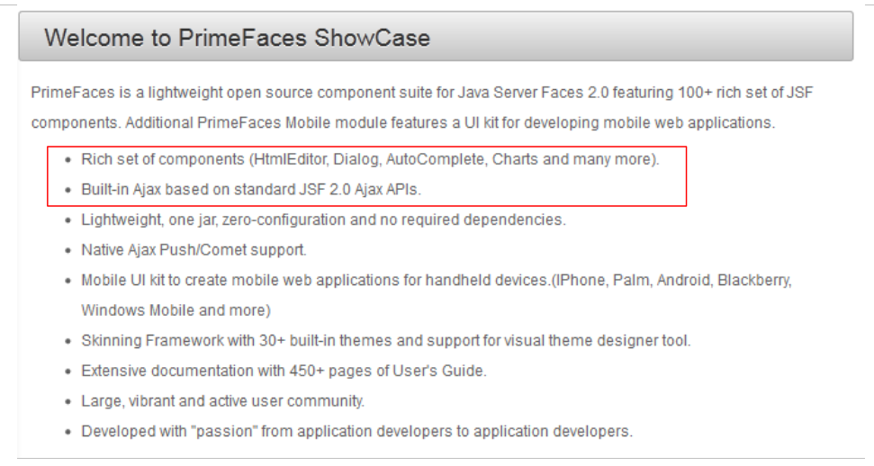
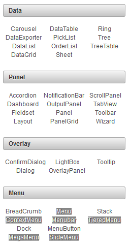
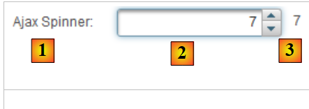
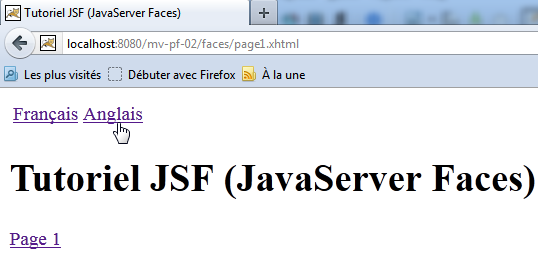
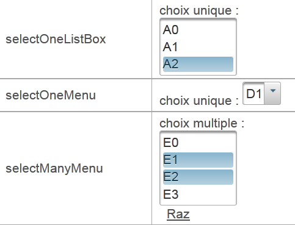
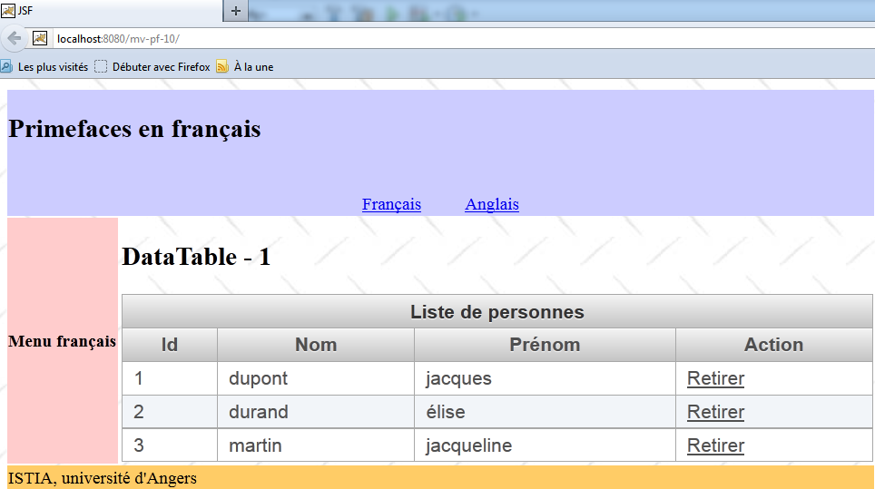
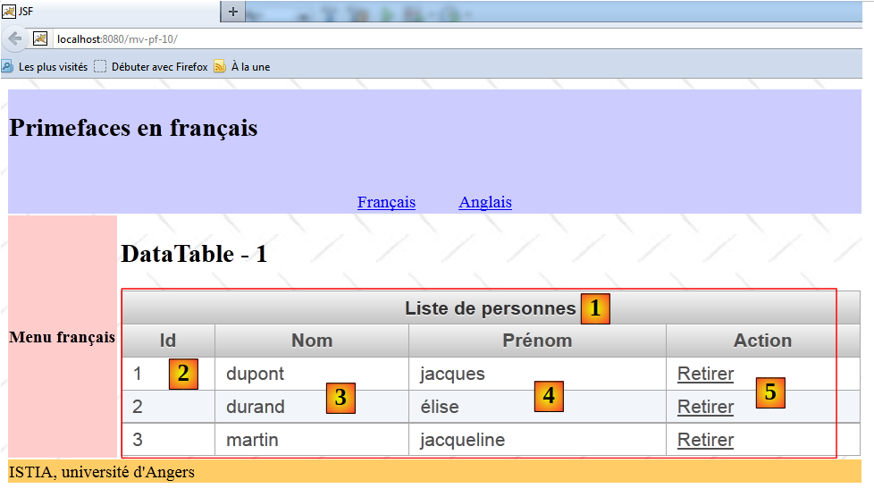
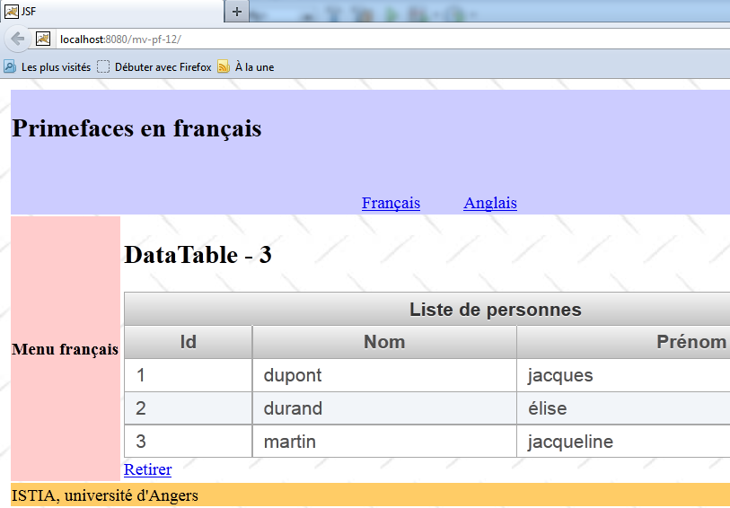
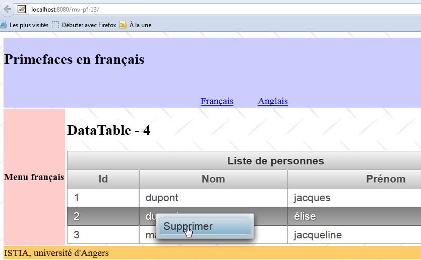
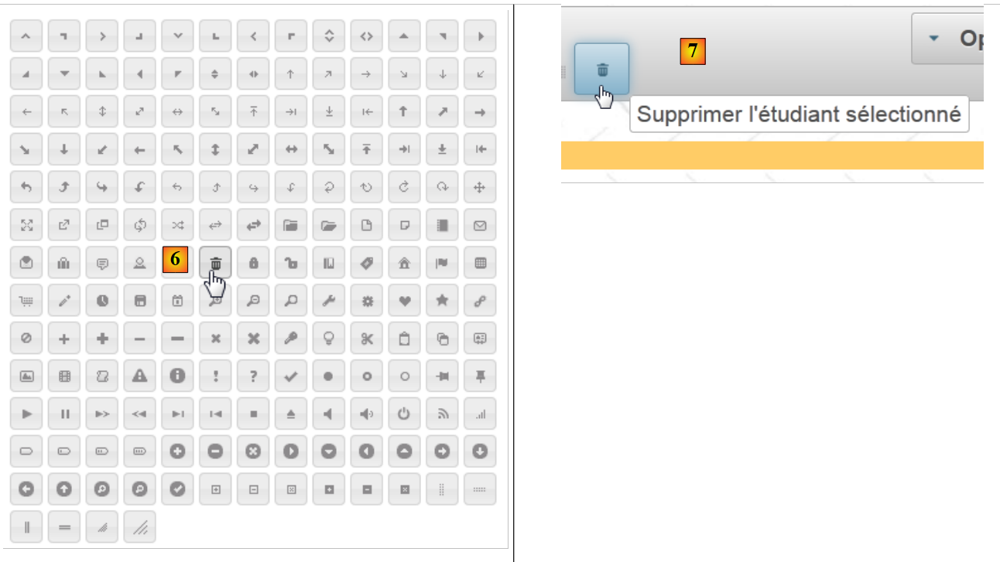

5. Einführung in die Komponentenbibliothek PrimeFaces
5.1. Die Rolle von PrimeFaces in einer Anwendung JSF
Kehren wir zur Architektur einer JSF-Anwendung zurück, wie wir sie zu Beginn dieses Dokuments betrachtet haben:
 |
Die Seiten JSF wurden mit drei Tag-Bibliotheken erstellt:
- Zeile 2: die Tags <h:x> aus dem Namensraum [http://java.sun.com/jsf/html], die den Tags HTML entsprechen,
- Zeile 3: die Tags <f:y> aus dem Namensraum [http://java.sun.com/jsf/core], die den Tags JSF entsprechen,
- Zeile 4: die Tags <ui:z> aus dem Namensraum [http://java.sun.com/jsf/facelets], die den Facelet-Tags entsprechen.
Um die Seiten JSF zu erstellen, fügen wir eine vierte Tag-Bibliothek hinzu, nämlich die der PrimeFaces-Komponenten.
- Zeile 3: Die Tags <p:z> aus dem Namensraum [http://primefaces.org/ui] entsprechen den PrimeFaces-Komponenten.
Dies ist die einzige Änderung, die vorgenommen wird. Sie wird daher in den Ansichten angezeigt. Die Ereignisbehandler und Modelle bleiben unverändert gegenüber JSF. Dies ist ein wichtiger Punkt, den es zu verstehen gilt.
Die Verwendung von PrimeFaces-Komponenten ermöglicht es, dank der zahlreichen Komponenten dieser Bibliothek benutzerfreundlichere Weboberflächen zu erstellen, die dank der nativ verwendeten AJAX-Technologie zudem flüssiger laufen. Man spricht dabei von Rich-Internet-Anwendungen (RIA).
Die bisherige JSF-Architektur wird zur folgenden PF-Architektur (PrimeFaces):
 |
5.2. Die Vorteile von Primefaces
Auf der Primefaces-Website [http://www.primefaces.org/showcase/ui/home.jsf] finden Sie eine Liste der Komponenten, die auf einer Seite PF verwendet werden können:
 |
In den folgenden Beispielen werden wir die ersten beiden Funktionen von Primefaces nutzen:
- einige der rund hundert angebotenen Komponenten
- sowie deren natives Verhalten AJAX.
Zu den angebotenen Komponenten gehören:
 |  |  |
Wir werden in unseren Beispielen nur etwa fünfzehn davon verwenden, aber das reicht aus, um die Prinzipien des Aufbaus einer PrimeFaces-Seite zu verstehen.
5.3. Primefaces lernen
PrimeFaces bietet Anwendungsbeispiele für jede seiner Komponenten. Klicken Sie einfach auf den entsprechenden Link. Sehen wir uns ein Beispiel an:
 |
- in [1], das Beispiel für die Komponente [Spinner],
- in [2] das Dialogfeld, das nach einem Klick auf die Schaltfläche [Submit] angezeigt wird.
Für uns gibt es hier drei Neuerungen:
- die Komponente [Spinner], die in JSF standardmäßig nicht vorhanden ist,
- ebenso wie das Dialogfeld,
- und schließlich ist die durch [Submit] ausgelöste Komponente POST AJAX-basiert. Wenn man den Browser während der Ausführung von POST genau beobachtet, sieht man die Sanduhr nicht. Die Seite wird nicht neu geladen. Sie wird lediglich geändert: Eine neue Komponente, in diesem Fall das Dialogfeld, erscheint auf der Seite.
Schauen wir uns an, wie das alles zustande kommt. Der Code XHTML aus dem Beispiel lautet wie folgt:
<h:form>
<p:panel header="Spinners">
<h:panelGrid id="grid" columns="2" cellpadding="5">
<h:outputLabel for="spinnerBasic" value="Basic Spinner: " />
<p:spinner id="spinnerBasic" value="#{spinnerController.number1}"/>
<h:outputLabel for="spinnerStep" value="Step Factor: " />
<p:spinner id="spinnerStep" value="#{spinnerController.number2}" stepFactor="0.25"/>
<h:outputLabel for="minmax" value="Min/Max: " />
<p:spinner id="minmax" value="#{spinnerController.number3}" min="0" max="100"/>
<h:outputLabel for="prefix" value="Prefix: " />
<p:spinner id="prefix" value="0" prefix="$" min="0" value="#{spinnerController.number4}"/>
<h:outputLabel for="ajaxspinner" value="Ajax Spinner: " />
<p:outputPanel>
<p:spinner id="ajaxspinner" value="#{spinnerController.number5}">
<p:ajax update="ajaxspinnervalue" process="@this" />
</p:spinner>
<h:outputText id="ajaxspinnervalue" value="#{spinnerController.number5}"/>
</p:outputPanel>
</h:panelGrid>
</p:panel>
<p:commandButton value="Submit" update="display" oncomplete="dialog.show()" />
<p:dialog header="Values" widgetVar="dialog" showEffect="fold" hideEffect="fold">
...
</p:dialog>
</h:form>
Zunächst ist festzustellen, dass hier klassische JSF-Tags vorkommen: <h:form> in Zeile 1, <h:panelGrid> in Zeile 3, <h:outputLabel> in Zeile 4. Einige JSF-Tags werden von PF übernommen und erweitert: <p:commandButton> Zeile 21. Anschließend finden sich Formatierungs-Tags PF: <p:panel> Zeile 2, <p:outputPanel> Zeile 13, <p:dialog> Zeile 23. Schließlich gibt es Eingabe-Tags: <p:spinner> Zeile 5.
Analysieren wir diesen Code anhand der Ansicht:
 |
- in [1], die Komponente, die mit dem Tag <p:panel> in Zeile 2 erzeugt wurde,
- in [2] das Eingabefeld, das durch die Kombination der Tags <p:outputLabel> und <p:spinner> in den Zeilen 6 und 7 entsteht,
- in [3], die Schaltfläche von POST, die mit dem Tag <p:commandButton> aus Zeile 21 erstellt wurde,
- in [4], das Dialogfeld aus den Zeilen 23–25,
- in [5], ein unsichtbarer Container für zwei Komponenten. Er wird durch das Tag <p:outputPanel> in Zeile 13 erstellt.
Betrachten wir den folgenden Code, der eine Aktion AJAX implementiert:
<h:outputLabel for="ajaxspinner" value="Ajax Spinner: " />
<p:outputPanel>
<p:spinner id="ajaxspinner" value="#{spinnerController.number5}">
<p:ajax update="ajaxspinnervalue" process="@this" />
</p:spinner>
<h:outputText id="ajaxspinnervalue" value="#{spinnerController.number5}"/>
</p:outputPanel>
Dieser Code erzeugt die folgende Ansicht:
 |
- Zeile 1: Zeigt den Text [1] an. Ist gleichzeitig eine Bezeichnung für die Komponente id=ajaxspinner (Attribut „for“). Diese Komponente ist die aus Zeile 3 (Attribut „id“),
- Zeilen 3–5: Zeigen die Komponente [2] an. Diese Komponente ist eine Eingabe-/Anzeigekomponente, die der Vorlage #{spinnerController.number5} zugeordnet ist (Attribut „value“),
- Zeile 6: Zeigt die Komponente [3] an. Diese Komponente ist eine Anzeigekomponente, die mit dem Modell #{spinnerController.number5} verknüpft ist (Attribut „value“),
- Zeile 4: Das Tag <p:ajax> fügt dem spinner ein Verhalten AJAX hinzu. Jedes Mal, wenn sich dessen Wert ändert, wird ein POST mit diesem Wert (Attribut process="@this") an das Modell #{spinnerController.number5}. Anschließend wird die Seite aktualisiert (Attribut „update“). Dieses Attribut hat als Wert die ID einer Komponente auf der Seite, hier die in Zeile 6. Die Zielkomponente des Attributs „update“ wird dann mit dem Modell aktualisiert. Dieses lautet erneut #{spinnerController.number5}, also den Wert von spinner. Somit folgt das Feld [3] den Eingaben im Feld [2].
Hier handelt es sich um ein AJAX-Verhalten, wobei das Akronym für „Asynchronous JavaScript and XML“ steht. Im Allgemeinen lässt sich ein AJAX-Verhalten wie folgt beschreiben:
 |
- Der Browser zeigt eine HTML-Seite an, die JavaScript-Code enthält (J von AJAX). Die Elemente der Seite bilden ein JavaScript-Objekt, das als DOM (Document Object Model) bezeichnet wird,
- der Server hostet die Webanwendung, die diese Seite erzeugt hat,
- in [1] tritt ein Ereignis auf der Seite ein. Zum Beispiel die Inkrementierung von spinner. Dieses Ereignis wird von JavaScript verarbeitet,
- in [2] sendet das JavaScript ein POST an die Webanwendung. Dies geschieht asynchron (das A in AJAX). Der Benutzer kann weiterhin mit der Seite arbeiten. Sie ist nicht eingefroren, kann aber bei Bedarf eingefroren werden. Der POST aktualisiert das Seitenmodell anhand der übermittelten Werte, hier das Modell #{spinnerController.number5},
- zu [3]. Die Webanwendung sendet an das JavaScript eine Antwort XML (das X aus AJAX) oder JSON (JavaScript-Objektnotation),
- in [4] verwendet das JavaScript diese Antwort, um einen bestimmten Bereich von DOM zu aktualisieren, in diesem Fall den Bereich von id=ajaxspinnervalue.
Bei der Verwendung von JSF und PrimeFaces wird das JavaScript von PrimeFaces generiert. Diese Bibliothek stützt sich auf die JavaScript-Bibliothek JQuery. Ebenso stützen sich die PrimeFaces-Komponenten auf diejenigen der Komponentenbibliothek JQuery und UI (User Interface). Somit bildet JQuery die Grundlage für PrimeFaces.
Kehren wir zu unserem Beispiel zurück und stellen nun die Komponente POST der Schaltfläche [Submit] vor:
 |
Der mit POST verbundene Code lautet wie folgt:
<p:commandButton value="Submit" update="display" oncomplete="dialog.show()" />
<p:dialog header="Values" widgetVar="dialog" showEffect="fold" hideEffect="fold">
<h:panelGrid id="display" columns="2" cellpadding="5">
<h:outputText value="Value 1: " />
<h:outputText value="#{spinnerController.number1}" />
<h:outputText value="Value 2: " />
<h:outputText value="#{spinnerController.number2}" />
<h:outputText value="Value 3: " />
<h:outputText value="#{spinnerController.number3}" />
<h:outputText value="Value 4: " />
<h:outputText value="#{spinnerController.number4}" />
<h:outputText value="Value 5: " />
<h:outputText value="#{spinnerController.number5}" />
</h:panelGrid>
</p:dialog>
</h:form>
- Zeile 1: Der POST wird durch die Schaltfläche in Zeile 1 ausgelöst. In PrimeFaces lösen Tags, die einen POST auslösen, diesen standardmäßig in Form eines AJAX-Aufrufs aus. Deshalb verfügen diese Tags über ein „update“-Attribut, um den Bereich anzugeben, der aktualisiert werden soll, sobald die Antwort vom Server empfangen wurde. In diesem Fall ist der zu aktualisierende Bereich das panelGrid in Zeile 4. Nach der Rückgabe des POST wird dieser Bereich also mit den an das Modell übermittelten Werten aktualisiert. Allerdings befinden sie sich in einem Dialogfeld, das standardmäßig nicht sichtbar ist. Das Attribut „oncomplete“ in Zeile 1 sorgt dafür, dass es angezeigt wird. Dieses Ereignis tritt am Ende der Verarbeitung von „POST“ ein. Der Wert dieses Attributs ist JavaScript-Code. Hier wird das Dialogfeld mit der ID „dialog“ angezeigt, also das aus Zeile 3 (Attribut widgetVar),
- Zeile 3: Hier sind verschiedene Attribute des Dialogfelds zu sehen. Man muss ein wenig experimentieren, um herauszufinden, was sie bewirken.
Wir haben das Modell bereits erwähnt, es aber noch nicht vorgestellt. Es ist dieses hier:
Im Allgemeinen kann man wie folgt vorgehen:
- die PrimeFaces-Komponente auswählen, die man verwenden möchte,
- ihr Beispiel durchgehen. Die Primefaces-Beispiele sind gut gemacht und leicht verständlich.
5.4. Ein erstes PrimeFaces-Projekt: mv-pf-01
Erstellen wir ein Maven-Webprojekt mit NetBeans:
 |
- [1, 2, 3]: Wir erstellen ein Maven-Projekt vom Typ [Web Application],
 |
- [4]: Als Server wird Tomcat verwendet,
- in [5], dem generierten Projekt,
- in [6] wird es von der Datei [index.jsp] und dem Java-Paket bereinigt,
 |
- in [7, 8]: In den Projekteigenschaften fügen wir Unterstützung für Java Server Faces hinzu,
 |
- in [9]; auf der Registerkarte [Components] wählen wir die PrimeFaces-Komponentenbibliothek aus. NetBeans bietet Unterstützung für weitere Komponentenbibliotheken: ICEFaces und RichFaces.
- In [10], dem generierten Projekt. In [11] ist die Abhängigkeit von PrimeFaces zu beachten.
Im Klartext: Ein Primefaces-Projekt ist ein klassisches JSF-Projekt, dem eine Abhängigkeit von Primefaces hinzugefügt wurde. Mehr nicht.
Nachdem wir das verstanden haben, ändern wir die Datei [pom.xml], um mit den neuesten Versionen der Bibliotheken zu arbeiten:
<dependency>
<groupId>com.sun.faces</groupId>
<artifactId>jsf-impl</artifactId>
<version>2.1.8</version>
<scope>compile</scope>
</dependency>
<dependency>
<groupId>org.primefaces</groupId>
<artifactId>primefaces</artifactId>
<version>3.3</version>
<scope>compile</scope>
</dependency>
<dependency>
<groupId>javax</groupId>
<artifactId>javaee-web-api</artifactId>
<version>6.0</version>
<scope>provided</scope>
</dependency>
</dependencies>
<repositories>
<repository>
<id>jsf20</id>
<name>Repository for library Library[jsf20]</name>
<url>http://download.java.net/maven/2/</url>
</repository>
<repository>
<id>primefaces</id>
<name>Repository for library Library[primefaces]</name>
<url>http://repository.primefaces.org/</url>
</repository>
</repositories>
In den Zeilen 26–30 ist das Maven-Repository für Primefaces zu beachten. Nachdem diese Änderungen vorgenommen wurden, erstellen wir das Projekt, um den Download der Abhängigkeiten zu starten. Wir erhalten dann das Projekt [12].
Versuchen wir nun, das Beispiel, das wir behandelt haben, nachzubauen. Die Seite [index.html] sieht nun wie folgt aus:
<?xml version='1.0' encoding='UTF-8' ?>
<!DOCTYPE html PUBLIC "-//W3C//DTD XHTML 1.0 Transitional//EN" "http://www.w3.org/TR/xhtml1/DTD/xhtml1-transitional.dtd">
<html xmlns="http://www.w3.org/1999/xhtml"
xmlns:h="http://java.sun.com/jsf/html"
xmlns:p="http://primefaces.org/ui"
xmlns:f="http://java.sun.com/jsf/core"
xmlns:ui="http://java.sun.com/jsf/facelets">
<h:head>
<title>Spinner</title>
</h:head>
<h:body>
<!-- Formular -->
<h:form>
<p:panel header="Spinners">
<h:panelGrid id="grid" columns="2" cellpadding="5">
<h:outputLabel for="spinnerBasic" value="Basic Spinner: " />
<p:spinner id="spinnerBasic" value="#{spinnerController.number1}"/>
<h:outputLabel for="spinnerStep" value="Step Factor: " />
<p:spinner id="spinnerStep" value="#{spinnerController.number2}" stepFactor="0.25"/>
<h:outputLabel for="minmax" value="Min/Max: " />
<p:spinner id="minmax" value="#{spinnerController.number3}" min="0" max="100"/>
<h:outputLabel for="prefix" value="Prefix: " />
<p:spinner id="prefix" prefix="$" min="0" value="#{spinnerController.number4}"/>
<h:outputLabel for="ajaxspinner" value="Ajax Spinner: " />
<p:outputPanel>
<p:spinner id="ajaxspinner" value="#{spinnerController.number5}">
<p:ajax update="ajaxspinnervalue" process="@this" />
</p:spinner>
<h:outputText id="ajaxspinnervalue" value="#{spinnerController.number5}"/>
</p:outputPanel>
</h:panelGrid>
</p:panel>
<p:commandButton value="Submit" update="display" oncomplete="dialog.show()" />
<!-- Dialogfeld -->
<p:dialog header="Values" widgetVar="dialog" showEffect="fold" hideEffect="fold">
<h:panelGrid id="display" columns="2" cellpadding="5">
<h:outputText value="Value 1: " />
<h:outputText value="#{spinnerController.number1}" />
<h:outputText value="Value 2: " />
<h:outputText value="#{spinnerController.number2}" />
<h:outputText value="Value 3: " />
<h:outputText value="#{spinnerController.number3}" />
<h:outputText value="Value 4: " />
<h:outputText value="#{spinnerController.number4}" />
<h:outputText value="Value 5: " />
<h:outputText value="#{spinnerController.number5}" />
</h:panelGrid>
</p:dialog>
</h:form>
</h:body>
</html>
Wir dürfen Zeile 5 nicht vergessen, in der der Namensraum der PrimeFaces-Tag-Bibliothek deklariert wird. Wir fügen dem Projekt die Bean hinzu, die als Vorlage für die Seite dient:
 |
Die Bean lautet wie folgt:
package beans;
import javax.faces.bean.RequestScoped;
import javax.faces.bean.ManagedBean;
@ManagedBean
@RequestScoped
public class SpinnerController {
// Vorlage
private int number1;
private double number2;
private int number3;
private int number4;
private int number5;
// Getter und Setter
...
}
Die Klasse ist ein Bean (Zeile 6) mit Request-Gültigkeitsbereich (Zeile 7). Da kein Name angegeben wurde, trägt der Bean den Namen der Klasse, wobei das erste Zeichen klein geschrieben wird: spinnerController.
Wenn man das Projekt ausführt, erhält man Folgendes:
 |
Wir haben somit gerade gezeigt, wie man ein Beispiel von der Primefaces-Website testet. Alle Beispiele lassen sich auf diese Weise testen.
Im weiteren Verlauf werden wir uns nur auf bestimmte Primefaces-Komponenten konzentrieren. Zunächst werden wir die mit JSF untersuchten Beispiele wieder aufgreifen und bestimmte JSF-Tags durch Primefaces-Tags ersetzen. Das Erscheinungsbild der Seiten wird sich geringfügig ändern, sie verhalten sich wie bei AJAX, die zugehörigen Beans müssen jedoch nicht geändert werden. In jedem der folgenden Beispiele beschränken wir uns darauf, den XHTML-Code der Seiten und die dazugehörigen Screenshots zu präsentieren. Der Leser ist eingeladen, die Beispiele zu testen, um die Unterschiede zwischen den JSF-Seiten und den PF-Seiten zu erkennen.
5.5. Beispiel mv-pf-02: Ereignismanager – Internationalisierung – Navigation zwischen Seiten
Bei diesem Projekt handelt es sich um die Portierung des Projekts JSF [mv-jsf2-02] (Absatz 2.4, Seite 41):
 |  |
Das NetBeans-Projekt lautet wie folgt:
 |
Die Seite [index.html] sieht wie folgt aus:
<?xml version='1.0' encoding='UTF-8' ?>
<!DOCTYPE html PUBLIC "-//W3C//DTD XHTML 1.0 Transitional//EN" "http://www.w3.org/TR/xhtml1/DTD/xhtml1-transitional.dtd">
<html xmlns="http://www.w3.org/1999/xhtml"
xmlns:h="http://java.sun.com/jsf/html"
xmlns:p="http://primefaces.org/ui"
xmlns:f="http://java.sun.com/jsf/core"
xmlns:ui="http://java.sun.com/jsf/facelets">
<f:view locale="#{changeLocale.locale}">
<h:head>
<title><h:outputText value="#{msg['welcome.titre']}" /></title>
</h:head>
<body>
<h:form id="formulaire">
<h:panelGrid columns="2">
<p:commandLink value="#{msg['welcome.langue1']}" action="#{changeLocale.setFrenchLocale}" ajax="false"/>
<p:commandLink value="#{msg['welcome.langue2']}" action="#{changeLocale.setEnglishLocale}" ajax="false"/>
</h:panelGrid>
<h1><h:outputText value="#{msg['welcome.titre']}" /></h1>
<p:commandLink value="#{msg['welcome.page1']}" action="page1" ajax="false"/>
</h:form>
</body>
</f:view>
</html>
In den Zeilen 15, 16 und 19 wurden die Tags <h:commandLink> durch Tags <p:commandLink> ersetzt. Dieses Tag verhält sich standardmäßig wie AJAX, was durch die Angabe des Attributs ajax="false" unterbunden werden kann. Daher verhalten sich die Tags <p:commandLink> hier wie <h:commandLink>-Tags: Beim Klicken auf diese Links wird die Seite neu geladen.
5.6. Beispiel mv-pf-03: Seitenlayout mithilfe von Facelets
Dieses Projekt zeigt die Erstellung von XHTML-Seiten mithilfe der Facelets-Vorlagen aus dem Beispiel [mv-jsf2-09] (Abschnitt 2.11):
 |
Das NetBeans-Projekt lautet wie folgt:
 |
- in [1], die Konfigurationsdateien des Projekts JSF,
- in [2], die Seiten in XHTML,
- in [3], das Support-Bean für den Sprachwechsel,
- in [4] die Meldungsdateien,
- in [5], die Abhängigkeiten.
Die Seiten des Projekts basieren auf der Vorlage [layout.xhtml]:
<?xml version='1.0' encoding='UTF-8' ?>
<!DOCTYPE html PUBLIC "-//W3C//DTD XHTML 1.0 Transitional//EN" "http://www.w3.org/TR/xhtml1/DTD/xhtml1-transitional.dtd">
<html xmlns="http://www.w3.org/1999/xhtml"
xmlns:h="http://java.sun.com/jsf/html"
xmlns:p="http://primefaces.org/ui"
xmlns:f="http://java.sun.com/jsf/core"
xmlns:ui="http://java.sun.com/jsf/facelets">
<f:view locale="#{changeLocale.locale}">
<h:head>
<title>JSF</title>
<h:outputStylesheet library="css" name="styles.css"/>
</h:head>
<h:body style="background-image: url('${request.contextPath}/resources/images/standard.jpg');">
<h:form id="formulaire">
<table style="width: 600px">
<tr>
<td colspan="2" bgcolor="#ccccff">
<ui:include src="entete.xhtml"/>
</td>
</tr>
<tr>
<td style="width: 100px; height: 200px" bgcolor="#ffcccc">
<ui:include src="menu.xhtml"/>
</td>
<td>
<p:outputPanel id="contenu">
<ui:insert name="contenu" >
<h2>Contenu</h2>
</ui:insert>
</p:outputPanel>
</td>
</tr>
<tr bgcolor="#ffcc66">
<td colspan="2">
<ui:include src="basdepage.xhtml"/>
</td>
</tr>
</table>
</h:form>
</h:body>
</f:view>
</html>
- Zeile 9: Ein <f:view>-Tag umschließt die gesamte Seite, um die damit ermöglichte Internationalisierung zu nutzen,
- Zeile 15: ein Formular mit der ID „formular“. Dieses Formular bildet den Hauptteil der Seite. In diesem Hauptteil gibt es nur einen dynamischen Abschnitt, nämlich die Zeilen 28–30. Dort wird der variable Teil der Seite eingefügt:
 |
- Der oben eingerahmte Bereich wird durch Aufrufe von AJAX aktualisiert. Um ihn zu identifizieren, haben wir ihn in einen PrimeFaces-Container eingefügt, der durch das Tag <p:outputPanel> (Zeile 27) generiert wurde. Dieser Container wurde „contenu“ genannt (Attribut „id“). Da er sich in einem Formular befindet, das selbst ein Container mit dem Namen „formulaire“ ist, lautet der vollständige Name des dynamischen Bereichs:formulaire:contenu. Das erste „:“ gibt an, dass man von der Dokumentwurzel ausgeht, dann in den Container mit dem Namen „formulaire“ wechselt und anschließend in den Container mit dem Namen „contenu“. Eine Schwierigkeit bei AJAX besteht darin, die Felder, die durch einen Aufruf von AJAX aktualisiert werden sollen, korrekt zu benennen. Am einfachsten ist es, den Quellcode der empfangenen Seite HTML anzusehen:
Oben ist zu sehen, dass das Tag <h:outputPanel> ein Tag HTML <span> generiert hat. In diesem Beispiel bezeichnen der relative Name „formulaire:contenu“ (ohne das führende „:“) und der vollständige Name „:formulaire:contenu“ (mit dem führenden „:“) dasselbe Objekt.
Es ist zu beachten, dass die Aufrufe AJAX (<p:commandButton>, <p:commandLink>), die den dynamischen Bereich aktualisieren, das Attribut update=":formulaire:contenu" haben.
Die Seite [index.xhtml] ist die einzige Seite, die vom Projekt angezeigt wird:
<?xml version='1.0' encoding='UTF-8' ?>
<!DOCTYPE html PUBLIC "-//W3C//DTD XHTML 1.0 Transitional//EN" "http://www.w3.org/TR/xhtml1/DTD/xhtml1-transitional.dtd">
<html xmlns="http://www.w3.org/1999/xhtml"
xmlns:h="http://java.sun.com/jsf/html"
xmlns:p="http://primefaces.org/ui"
xmlns:f="http://java.sun.com/jsf/core"
xmlns:ui="http://java.sun.com/jsf/facelets">
<ui:composition template="layout.xhtml">
<ui:define name="contenu">
<ui:fragment rendered="#{requestScope.page1 || requestScope.page2==null}">
<ui:include src="page1.xhtml"/>
</ui:fragment>
<ui:fragment rendered="#{requestScope.page2}">
<ui:include src="page2.xhtml"/>
</ui:fragment>
</ui:define>
</ui:composition>
</html>
- Zeile 8: Die Vorlage von [index.xhtml] ist die soeben vorgestellte Seite [layout.xhtml],
- Zeile 9: Dies ist der Bereich „Inhalts-ID“, der von [index.html] aktualisiert wird. In diesem Bereich befinden sich zwei Fragmente:
- das Fragment [page1.xhtml] in Zeile 11;
- das Fragment [page2.xhtml] in Zeile 14.
Diese beiden Fragmente schließen sich gegenseitig aus.
- Zeile 10: Das Fragment [page1.xhtml] wird angezeigt, wenn das Attribut „page1“ der Anfrage den Wert „true“ hat oder wenn das Attribut „page2“ nicht vorhanden ist. Dies ist bei der allerersten Anfrage der Fall, bei der keines dieser Attribute in der Anfrage enthalten ist. In diesem Fall wird das Fragment [page1.xhtml] angezeigt,
- Zeile 11; das Fragment [page2.xhtml] wird angezeigt, wenn das Attribut „page2“ der Anfrage den Wert „true“ hat
Das Fragment [page1.xhtml] lautet wie folgt:
<?xml version='1.0' encoding='UTF-8' ?>
<!DOCTYPE html PUBLIC "-//W3C//DTD XHTML 1.0 Transitional//EN" "http://www.w3.org/TR/xhtml1/DTD/xhtml1-transitional.dtd">
<html xmlns="http://www.w3.org/1999/xhtml"
xmlns:h="http://java.sun.com/jsf/html"
xmlns:p="http://primefaces.org/ui"
xmlns:f="http://java.sun.com/jsf/core"
xmlns:ui="http://java.sun.com/jsf/facelets">
<body>
<h:panelGrid columns="2">
<p:commandLink value="#{msg['page1.langue1']}" actionListener="#{changeLocale.setFrenchLocale}" ajax="true" update=":formulaire:contenu"/>
<p:commandLink value="#{msg['page1.langue2']}" actionListener="#{changeLocale.setEnglishLocale}" ajax="true" update=":formulaire:contenu"/>
</h:panelGrid>
<h1><h:outputText value="#{msg['page1.titre']}" /></h1>
<p:commandLink value="#{msg['page1.lien']}" update=":formulaire:contenu">
<f:setPropertyActionListener value="#{true}" target="#{requestScope.page2}" />
</p:commandLink>
</body>
</html>
und zeigt folgenden Inhalt an:
 |
- Zeilen 11 und 12: die beiden Links zum Ändern der Sprache. Diese beiden Links lösen Aufrufe von AJAX (ajax=true) aus. Dies ist die Standardeinstellung. Das Attribut ajax=true kann daher weggelassen werden. Wir werden dies im weiteren Verlauf nicht mehr tun. Es ist zu beachten, dass diese beiden Links den Bereich :formular:inhalt (Attribut update) aktualisieren, der oben eingerahmt ist,
- Zeile 15: ein Navigationslink AJAX, der ebenfalls den Bereich :formular:inhalt aktualisiert,
- Zeile 16: Wir verwenden das Tag <h:setPropertyActionListener>, um das Attribut „page2“ mit dem Wert „true“ in die Abfrage aufzunehmen. Dies bewirkt, dass das Fragment [page2.xhtml] (Zeile 6 unten) auf der Seite [index.xhtml] angezeigt wird:
<ui:composition template="layout.xhtml">
<ui:define name="contenu">
<ui:fragment rendered="#{requestScope.page1 || requestScope.page2==null}">
<ui:include src="page1.xhtml"/>
</ui:fragment>
<ui:fragment rendered="#{requestScope.page2}">
<ui:include src="page2.xhtml"/>
</ui:fragment>
</ui:define>
</ui:composition>
Das Fragment [page2.xhtml] funktioniert analog:
 |
Der Code von [page2.xhtml] lautet wie folgt:
<?xml version='1.0' encoding='UTF-8' ?>
<!DOCTYPE html PUBLIC "-//W3C//DTD XHTML 1.0 Transitional//EN" "http://www.w3.org/TR/xhtml1/DTD/xhtml1-transitional.dtd">
<html xmlns="http://www.w3.org/1999/xhtml"
xmlns:h="http://java.sun.com/jsf/html"
xmlns:p="http://primefaces.org/ui"
xmlns:f="http://java.sun.com/jsf/core"
xmlns:ui="http://java.sun.com/jsf/facelets">
<body>
<h1><h:outputText value="#{msg['page2.entete']}"/></h1>
<p:commandLink value="#{msg['page2.lien']}" update=":formulaire:contenu">
<f:setPropertyActionListener value="#{true}" target="#{requestScope.page1}" />
</p:commandLink>
</body>
</html>
Aus diesem Beispiel behalten wir für den weiteren Verlauf folgende Punkte im Hinterkopf:
- Wir verwenden die Vorlage [layout.xhtml] als Seitenvorlage,
- der dynamische Bereich wird durch die ID „formulaire:contenu“ gekennzeichnet und durch Aufrufe von AJAX aktualisiert.
5.7. Beispiel mv-pf-04: Eingabeformular
Dieses Projekt ist die Portierung des Projekts JSF2 [mv-jsf2-03] (siehe Abschnitt 2.5):
 |
Das NetBeans-Projekt lautet wie folgt:
 |
Oben, in [1], sind die Seiten XHTML des Projekts zu sehen. Das Layout wird durch die zuvor behandelte Vorlage [layout.xhtml] gewährleistet. Die Seite [index.xhtml] ist die einzige Seite des Projekts. Sie wird im Bereich :formular:inhalt angezeigt. Ihr Code lautet wie folgt:
<?xml version='1.0' encoding='UTF-8' ?>
<!DOCTYPE html PUBLIC "-//W3C//DTD XHTML 1.0 Transitional//EN" "http://www.w3.org/TR/xhtml1/DTD/xhtml1-transitional.dtd">
<html xmlns="http://www.w3.org/1999/xhtml"
xmlns:h="http://java.sun.com/jsf/html"
xmlns:p="http://primefaces.org/ui"
xmlns:f="http://java.sun.com/jsf/core"
xmlns:ui="http://java.sun.com/jsf/facelets">
<ui:composition template="layout.xhtml">
<ui:define name="contenu">
<ui:include src="page1.xhtml"/>
</ui:define>
</ui:composition>
</html>
Sie zeigt lediglich das Fragment [page1.xhtml] an. Dieses entspricht dem im Beispiel [mv-jsf2-03] behandelten Formular. Zur Erinnerung: Dieses Formular diente dazu, die Eingabe-Tags JSF darzustellen. Diese Tags wurden hier durch PrimeFaces-Tags ersetzt.
PanelGrid
Um die Elemente von [page1.xhtml] zu formatieren, verwenden wir das Tag <p:panelGrid>. Zum Beispiel für die beiden Sprachlinks:
<!-- Sprachen -->
<p:panelGrid columns="2">
<p:commandLink value="#{msg['form.langue1']}" actionListener="#{changeLocale.setFrenchLocale}" update=":formulaire:contenu"/>
<p:commandLink value="#{msg['form.langue2']}" actionListener="#{changeLocale.setEnglishLocale}" update=":formulaire:contenu"/>
</p:panelGrid>
Das ergibt folgende Darstellung:
Eine weitere Form des Tags <p:panelGrid> lautet wie folgt:
<p:panelGrid>
<f:facet name="header">
<p:row>
<p:column colspan="3"><h:outputText value="#{msg['form.titre']}"/></p:column>
</p:row>
<p:row>
<p:column><h:outputText value="#{msg['form.headerCol1']}"/></p:column>
<p:column><h:outputText value="#{msg['form.headerCol2']}"/></p:column>
<p:column><h:outputText value="#{msg['form.headerCol3']}"/></p:column>
</p:row>
</f:facet>
<p:row>
<p:column>
<h:outputText value="inputText"/>
</p:column>
<p:column>
<h:outputLabel for="inputText" value="#{msg['form.loginPrompt']}" />
<p:inputText id="inputText" value="#{form.inputText}"/>
</p:column>
<p:column>
<h:outputText id="inputTextValue" value="#{form.inputText}"/>
</p:column>
</p:row>
...
<f:facet name="footer">
<p:row>
<p:column colspan="3">
<div align="center">
<p:commandButton value="#{msg['form.submitText']}" update=":formulaire:contenu"/>
</div>
</p:column>
</p:row>
</f:facet>
</p:panelGrid>
Die Zeilen und Spalten der Tabelle werden durch die Tags <p:row> und <p:column> gekennzeichnet.
Die Zeilen 3–12 definieren die Kopfzeile der Tabelle:
Die Zeilen 14–25 definieren eine Zeile der Tabelle:
Die Zeilen 27–35 definieren die Fußzeile der Tabelle:
inputText
<p:row>
<p:column>
<h:outputText value="inputText"/>
</p:column>
<p:column>
<h:outputLabel for="inputText" value="#{msg['form.loginPrompt']}" />
<p:inputText id="inputText" value="#{form.inputText}"/>
</p:column>
<p:column>
<h:outputText id="inputTextValue" value="#{form.inputText}"/>
</p:column>
</p:row>
Passwort
<p:row>
<p:column>
<h:outputText value="inputSecret"/>
</p:column>
<p:column>
<h:outputLabel for="inputSecret" value="#{msg['form.passwdPrompt']}"/>
<p:password id="inputSecret" value="#{form.inputSecret}" feedback="true"
promptLabel="#{msg['form.promptLabel']}" weakLabel="#{msg['form.weakLabel']}"
goodLabel="#{msg['form.goodLabel']}" strongLabel="#{msg['form.strongLabel']}" />
</p:column>
<p:column>
<h:outputText id="inputSecretValue" value="#{form.inputSecret}"/>
</p:column>
</p:row>
 |
In Zeile 7 ermöglicht das Attribut „feedback=true“ eine Rückmeldung zur Qualität des Passworts. [1]
inputTextArea
<p:row>
<p:column>
<h:outputText value="inputTextArea"/>
</p:column>
<p:column>
<h:outputLabel for="inputTextArea" value="#{msg['form.descPrompt']}"/>
<p:editor id="inputTextArea" value="#{form.inputTextArea}" rows="4"/>
</p:column>
<p:column>
<h:outputText id="inputTextAreaValue" value="#{form.inputTextArea}"/>
</p:column>
</p:row>
 |
Zeile 7: Das Tag <p:editor> zeigt einen Rich-Text-Editor an, mit dem der Text formatiert werden kann (Schriftart, Größe, Farbe, Ausrichtung usw.). An den Server wird der Code HTML des eingegebenen Textes [2] gesendet.
selectOneListBox
<p:row>
<p:column>
<h:outputText value="selectOneListBox"/>
</p:column>
<p:column>
<h:outputLabel for="selectOneListBox1" value="#{msg['form.selectOneListBox1Prompt']}"/>
<p:selectOneListbox id="selectOneListBox1" value="#{form.selectOneListBox1}">
<f:selectItem itemValue="1" itemLabel="un"/>
<f:selectItem itemValue="2" itemLabel="deux"/>
<f:selectItem itemValue="3" itemLabel="trois"/>
</p:selectOneListbox>
</p:column>
<p:column>
<h:outputText id="selectOneListBox1Value" value="#{form.selectOneListBox1}"/>
</p:column>
</p:row>
 |
selectOneMenu
<p:row>
<p:column>
<h:outputText value="selectOneMenu"/>
</p:column>
<p:column>
<h:outputLabel for="selectOneMenu" value="#{msg['form.selectOneMenuPrompt']}"/>
<p:selectOneMenu id="selectOneMenu" value="#{form.selectOneMenu}">
<f:selectItem itemValue="1" itemLabel="un"/>
<f:selectItem itemValue="2" itemLabel="deux"/>
<f:selectItem itemValue="3" itemLabel="trois"/>
<f:selectItem itemValue="4" itemLabel="quatre"/>
<f:selectItem itemValue="5" itemLabel="cinq"/>
</p:selectOneMenu>
</p:column>
<p:column>
<h:outputText id="selectOneMenuValue" value="#{form.selectOneMenu}"/>
</p:column>
</p:row>
 |
selectManyMenu
<p:row>
<p:column>
<h:outputText value="selectManyMenu"/>
</p:column>
<p:column>
<h:outputLabel for="selectManyMenu" value="#{msg['form.selectManyMenuPrompt']}"/>
<p:selectManyMenu id="selectManyMenu" value="#{form.selectManyMenu}" >
<f:selectItem itemValue="1" itemLabel="un"/>
<f:selectItem itemValue="2" itemLabel="deux"/>
<f:selectItem itemValue="3" itemLabel="trois"/>
<f:selectItem itemValue="4" itemLabel="quatre"/>
<f:selectItem itemValue="5" itemLabel="cinq"/>
</p:selectManyMenu>
<p:commandLink value="#{msg['form.buttonRazText']}" actionListener="#{form.clearSelectManyMenu()}" update=":formulaire:selectManyMenu" style="margin-left: 10px"/>
</p:column>
<p:column>
<h:outputText id="selectManyMenuValue" value="#{form.selectManyMenuValue}"/>
</p:column>
</p:row>
 |
In Zeile 14 ist zu beachten, dass der Link [Raz] eine Aktualisierung AJAX des Feldes :formulaire:selectManyMenu vornimmt, das der Komponente in Zeile 6 entspricht. Es ist jedoch zu beachten, dass beim POST AJAX alle Werte des Formulars übermittelt werden. Es wird also das gesamte Modell aktualisiert. Bei diesem Modell wird jedoch nur das Feld :formular:selectManyMenu aktualisiert.
selectBooleanCheckbox
<p:row>
<p:column>
<h:outputText value="selectBooleanCheckbox"/>
</p:column>
<p:column>
<h:outputLabel for="selectBooleanCheckbox" value="#{msg['form.selectBooleanCheckboxPrompt']}"/>
<p:selectBooleanCheckbox id="selectBooleanCheckbox" value="#{form.selectBooleanCheckbox}"/>
</p:column>
<p:column>
<h:outputText id="selectBooleanCheckboxValue" value="#{form.selectBooleanCheckbox}"/>
</p:column>
</p:row>
selectManyCheckbox
<p:row>
<p:column>
<h:outputText value="selectManyCheckbox"/>
</p:column>
<p:column>
<h:outputLabel for="selectManyCheckbox" value="#{msg['form.selectManyCheckboxPrompt']}"/>
<p:selectManyCheckbox id="selectManyCheckbox" value="#{form.selectManyCheckbox}">
<f:selectItem itemValue="1" itemLabel="rouge"/>
<f:selectItem itemValue="2" itemLabel="bleu"/>
<f:selectItem itemValue="3" itemLabel="blanc"/>
<f:selectItem itemValue="4" itemLabel="noir"/>
</p:selectManyCheckbox>
</p:column>
<p:column>
<h:outputText id="selectManyCheckboxValue" value="#{form.selectManyCheckboxValue}"/>
</p:column>
</p:row>
selectOneRadio
<p:row>
<p:column>
<h:outputText value="selectOneRadio"/>
</p:column>
<p:column>
<h:outputLabel for="selectOneRadio" value="#{msg['form.selectOneRadioPrompt']}"/>
<p:selectOneRadio id="selectOneRadio" value="#{form.selectOneRadio}" >
<f:selectItem itemValue="1" itemLabel="voiture"/>
<f:selectItem itemValue="2" itemLabel="vélo"/>
<f:selectItem itemValue="3" itemLabel="scooter"/>
<f:selectItem itemValue="4" itemLabel="marche"/>
</p:selectOneRadio>
</p:column>
<p:column>
<h:outputText id="selectOneRadioValue" value="#{form.selectOneRadio}"/>
</p:column>
</p:row>
5.8. Beispiel: mv-pf-05: dynamische Listen
Dieses Projekt ist die Portierung des Projekts JSF2 [mv-jsf2-04] (siehe Abschnitt 2.6):

Dieses Projekt führt im Vergleich zum Vorgängerprojekt keine neuen PrimeFaces-Tags ein. Daher werden wir es nicht näher erläutern. Es ist Teil der Liste der Beispiele, die dem Leser auf der Website des Dokuments zur Verfügung gestellt werden.
5.9. Beispiel: mv-pf-06: Navigation – Sitzung – Ausnahmebehandlung
Dieses Projekt ist eine Portierung des Projekts JSF2 [mv-jsf2-05] (siehe Abschnitt 2.7):
 |
Auch dieses Beispiel führt keine neuen PrimeFaces-Tags ein. Wir werden lediglich auf die oben eingerahmte Tabelle mit den Links eingehen:
<p:panelGrid columns="6">
<p:commandLink value="1" action="form1?faces-redirect=true" ajax="false"/>
<p:commandLink value="2" action="#{form.doAction2}" ajax="false"/>
<p:commandLink value="3" action="form3?faces-redirect=true" ajax="false"/>
<p:commandLink value="4" action="#{form.doAction4}" ajax="false"/>
<p:commandLink value="#{msg['form.pagealeatoireLink']}" action="#{form.doAlea}" ajax="false"/>
<p:commandLink value="#{msg['form.exceptionLink']}" action="#{form.throwException}" ajax="false"/>
</p:panelGrid>
- Alle Links verfügen über das Attribut `ajax=false`. Es findet also ein normaler Seitenladevorgang statt,
- beachten Sie die Zeilen 2 und 4, um zu sehen, wie eine Weiterleitung durchgeführt wird.
5.10. Beispiel: mv-pf-07: Validierung und Konvertierung der Eingaben
Dieses Projekt ist die Portierung des Projekts JSF2 [mv-jsf2-06] (siehe Abschnitt 2.8):

Die Anwendung führt zwei neue Tags ein, darunter das Tag <p:messages>:
<p:messages globalOnly="true"/>

sowie das Tag <p:message>:
<p:inputText id="saisie1" value="#{form.saisie1}" styleClass="saisie"/>
<p:message for="saisie1" styleClass="error"/>
Im Vergleich zum Tag <h:message> von JSF führt das Tag <p:message> von PF zu folgenden Änderungen:
- Das Erscheinungsbild der Fehlermeldung ist anders ([1]),
- das Feld mit der fehlerhaften Eingabe ist in [2] von einem roten Rahmen umgeben.
5.11. Beispiel: mv-pf-08: Ereignisse im Zusammenhang mit der Statusänderung von Komponenten
Dieses Projekt ist die Portierung des Projekts JSF2 [mv-jsf2-07] (siehe Abschnitt 2.9):

Das Projekt JSF führte das Konzept von listeners ein. Die Handhabung von listener mit PrimeFaces erfolgte anders.
Bei JSF:
Mit PrimeFaces:
- Zeile 2: Das Tag <h:selectOneMenu> ohne das Attribut valueChangeListener,
- Zeile 4: Das Tag <p:ajax> fügt seinem übergeordneten Tag <h:selectOneMenu> ein Verhalten AJAX hinzu. Standardmäßig reagiert es auf das Ereignis „Wertänderung“ der Liste combo1. Bei diesem Ereignis werden die Werte des Formulars, zu dem sie gehört, über einen Aufruf von AJAX an den Server gesendet. Das Modell wird somit aktualisiert. Dieses neue Modell wird verwendet, um die durch combo2 identifizierte Dropdown-Liste (Zeile 10) zu aktualisieren. Beachten Sie in Zeile 4, dass der Aufruf von AJAX keine Methode des Modells ausführt. Dies ist hier nicht erforderlich. Wir möchten lediglich das Modell anhand der eingegebenen Werte über POST ändern.
5.12. Beispiel: mv-pf-09: Unterstützte Eingabe
Dieses Projekt enthält Primefaces-spezifische Eingabefelder, die die Eingabe bestimmter Datentypen erleichtern:
 |
5.12.1. Das NetBeans-Projekt
Das NetBeans-Projekt sieht wie folgt aus:
 |
Der Nutzen des Projekts liegt in:
- der einzigen Seite [index.html], die von diesem Projekt angezeigt wird,
- der Vorlage [Form.java] dieser Seite.
5.12.2. Die Vorlage
Das Formular enthält vier Eingabefelder, die der folgenden Vorlage zugeordnet sind:
package forms;
import java.io.Serializable;
import java.util.ArrayList;
import java.util.Date;
import java.util.List;
import javax.faces.bean.RequestScoped;
import javax.faces.bean.ManagedBean;
@ManagedBean
@SessionScoped
public class Form implements Serializable {
private Date calendrier;
private Integer slider = 100;
private Integer spinner = 1;
private String autocompleteValue;
public Form() {
}
public List<String> autocomplete(String query) {
...
}
// Getter und Setter
...
}
Die vier Eingaben sind den Feldern in den Zeilen 14–17 zugeordnet.
5.12.3. Das Formular
Das Formular sieht wie folgt aus:
<?xml version='1.0' encoding='UTF-8' ?>
<html xmlns="http://www.w3.org/1999/xhtml"
xmlns:h="http://java.sun.com/jsf/html"
xmlns:p="http://primefaces.org/ui"
xmlns:f="http://java.sun.com/jsf/core"
xmlns:ui="http://java.sun.com/jsf/facelets">
<ui:composition template="layout.xhtml">
<ui:define name="contenu">
<h2><h:outputText value="#{msg['app.titre']}"/></h2>
<p:growl id="messages" autoUpdate="true"/>
<p:panelGrid columns="3" columnClasses="col1,col2,col3,col4">
<h:outputText value="#{msg['saisie.type']}" styleClass="entete"/>
<h:outputText value="#{msg['saisie.champ']}" styleClass="entete"/>
<h:outputText value="#{msg['bean.valeur']}" styleClass="entete"/>
<!-- Kalender -->
...
<!-- Schieberegler -->
...
<!-- Spinner -->
...
<!-- Autocomplete -->
...
</p:panelGrid>
</ui:define>
</ui:composition>
</html>
Sehen wir uns die vier Eingabefelder an.
5.12.4. Der Kalender
Mit dem Tag <p:calendar> kann ein Datum aus einem Kalender ausgewählt werden. Dieses Tag unterstützt verschiedene Attribute.
<h:outputText value="#{msg['calendar.prompt']}"/>
<p:calendar id="calendrier" value="#{form.calendrier}" pattern="dd/MM/yyyy" timeZone="Europe/Paris"/>
<h:outputText id="calendrierValue" value="#{form.calendrier}">
<f:convertDateTime pattern="dd/MM/yyyy" type="date" timeZone="Europe/Paris"/>
</h:outputText>
In Zeile 2 wird festgelegt, dass das Datum im Format „TT/MM/JJJJ“ angezeigt werden soll und dass die Zeitzone die von Paris ist. Wenn man den Cursor in das Eingabefeld setzt, wird ein Kalender angezeigt:
 |
5.12.5. Der Schieberegler
Mit dem Tag <p:slider> kann eine ganze Zahl eingegeben werden, indem ein Schieberegler entlang einer Leiste verschoben wird:
Der Code für das Tag lautet wie folgt:
<h:outputText value="#{msg['slider.prompt']}"/>
<h:panelGrid columns="1" style="margin-bottom:10px">
<p:inputText id="slider" value="#{form.slider}" required="true" requiredMessage="#{msg['slider.required']}" validatorMessage="#{msg['slider.invalide']}">
<f:validateLongRange minimum="100" maximum="200"/>
</p:inputText>
<p:slider for="slider" minValue="100" maxValue="200"/>
</h:panelGrid>
<h:outputText id="sliderValue" value="#{form.slider}"/>
- Zeile 3: Hier handelt es sich um ein klassisches <p:inputText>-Tag, mit dem die ganze Zahl eingegeben werden kann. Diese kann auch über den Schieberegler eingegeben werden,
- Zeile 4: Das Tag <p:slider> ist mit dem Eingabetag <p:inputText> verknüpft (Attribut „for“). Man legt einen Mindest- und einen Höchstwert fest.
5.12.6. Der Spinner
Diese Komponente haben wir bereits vorgestellt:
<h:outputText value="#{msg['spinner.prompt']}"/>
<p:spinner id="spinner" min="1" max="12" value="#{form.spinner}" required="true" requiredMessage="#{msg['spinner.required']}" validatorMessage="#{msg['spinner.invalide']}">
<f:validateLongRange minimum="1" maximum="12"/>
</p:spinner>
<h:outputText id="spinnerValue" value="#{form.spinner}"/>
Zeile 3: Der Spinner ermöglicht die Eingabe einer ganzen Zahl zwischen 1 und 12. Man kann die Zahl direkt in das Eingabefeld des Spinners eingeben oder die Pfeile verwenden, um den eingegebenen Wert zu erhöhen bzw. zu verringern.
5.12.7. Die automatische Vervollständigung
Bei der Eingabehilfe gibt man die ersten Zeichen des Suchbegriffs ein. Daraufhin erscheinen Vorschläge in einer Dropdown-Liste. Man kann einen dieser Vorschläge auswählen. Diese Komponente wird anstelle von Dropdown-Listen verwendet, wenn deren Inhalt zu umfangreich ist. Nehmen wir an, man möchte eine Dropdown-Liste mit Städten in Frankreich anbieten. Das sind mehrere Tausend Städte. Lässt man den Benutzer die ersten drei Zeichen des Stadtnamens eingeben, kann man ihm eine reduzierte Liste der Städte anbieten, die mit diesen Zeichen beginnen.
 |
Der Code dieser Komponente lautet wie folgt:
<h:outputText value="#{msg['autocomplete.prompt']}"/>
<p:autoComplete value="#{form.autocompleteValue}" completeMethod="#{form.autocomplete}" required="true" requiredMessage="#{msg['autocomplete.required']}"/>
<h:outputText id="autocompleteValue" value="#{form.autocompleteValue}"/>
<h:panelGroup/>
<h:panelGroup>
<center><p:commandLink value="#{msg['valider']}" update="formulaire:contenu"/></center>
</h:panelGroup>
<h:panelGroup/>
Das Tag <p:autoComplete> in Zeile 2 ermöglicht die automatische Eingabeunterstützung. Der Parameter, der uns hier interessiert, ist das Attribut completeMethod, dessen Wert der Name einer Methode des Modells ist, die dafür zuständig ist, Vorschläge zu machen, die den vom Benutzer eingegebenen Zeichen entsprechen. Diese Methode lautet hier wie folgt:
public List<String> autocomplete(String query) {
List<String> results = new ArrayList<String>();
for (int i = 0; i < 10; i++) {
results.add(query + i);
}
return results;
}
- Zeile 1: Die Methode erhält als Parameter die Zeichenfolge, die der Benutzer in das Eingabefeld eingegeben hat. Sie gibt eine Liste mit Vorschlägen zurück,
- Zeilen 4–6: Es wird eine Liste mit 10 Vorschlägen erstellt, die die als Parameter übergebenen Zeichen enthält und diesen eine Ziffer von 0 bis 9 hinzufügt.
5.12.8. Das Tag <p:growl>
Das Tag <p:growl> ist eine mögliche Alternative zum Tag <p:messages>, das Fehlermeldungen des Formulars anzeigt.
<p:growl id="messages" autoUpdate="true"/>
Im obigen Beispiel wird das Attribut „id“ nicht verwendet. Das Attribut autoUpdate=true gibt an, dass die Liste der Fehlermeldungen bei jedem Absenden des Formulars aktualisiert werden soll.
Nehmen wir an, das folgende Formular wird übermittelt: [1]:
 |
- Bei [2] zeigt das Tag <p:growl> dann die Fehlermeldungen an, die mit den fehlerhaften Eingaben verbunden sind.
5.13. Beispiel: mv-pf-10: dataTable – 1
Dieses Projekt stellt das Tag <p:dataTable> vor, das zur Anzeige von Datenlisten dient

5.13.1. Das NetBeans-Projekt
Das NetBeans-Projekt lautet wie folgt:
 |
Der Nutzen des Projekts liegt in:
- der einzigen Seite [index.html], die von diesem Projekt angezeigt wird,
- dem Modell [Form.java] dieser Seite und der Bean [Personne].
5.13.2. Die Meldungsdatei
Die Datei [messages_fr.properties] lautet wie folgt:
app.titre=intro-08
app.titre2=DataTable - 1
submit=Valider
personnes.headers.id=Id
personnes.headers.nom=Nom
personnes.headers.prenom=Pr\u00e9nom
layout.hautdepage=Primefaces en fran\u00e7ais
layout.menu=Menu fran\u00e7ais
layout.basdepage=ISTIA, universit\u00e9 d'Angers
form.langue1=Fran\u00e7ais
form.langue2=Anglais
form.noData=La liste des personnes est vide
form.listePersonnes=Liste de personnes
form.action=Action
5.13.3. Das Modell
Die Bean [Personne] repräsentiert eine Person:
package forms;
import java.io.Serializable;
public class Personne implements Serializable{
// Daten
private int id;
private String nom;
private String prénom;
// Hersteller
public Personne(){
}
public Personne(int id, String nom, String prénom){
this.id=id;
this.nom=nom;
this.prénom=prénom;
}
// toString
public String toString(){
return String.format("Personne[%d,%s,%s]", id,nom,prénom);
}
// Getter und Setter
...
}
Das Modell der Seite [index.xhtml] ist die folgende Klasse [Form]:
package forms;
import java.io.Serializable;
import java.util.ArrayList;
import java.util.List;
import javax.faces.bean.ManagedBean;
import javax.faces.bean.SessionScoped;
@ManagedBean
@SessionScoped
public class Form implements Serializable{
// Modell
private List<Personne> personnes;
private int personneId;
// Konstruktor
public Form() {
// Initialisierung der Personenliste
personnes = new ArrayList<Personne>();
personnes.add(new Personne(1, "dupont", "jacques"));
personnes.add(new Personne(2, "durand", "élise"));
personnes.add(new Personne(3, "martin", "jacqueline"));
}
public void retirerPersonne() {
...
}
// Getter und Setter
...
}
- Zeilen 9–10: Die Bean hat den Geltungsbereich „Session“,
- Zeilen 18–24: Der Konstruktor erstellt eine Liste mit drei Personen, die somit über mehrere Abfragen hinweg bestehen bleibt,
- Zeile 15: die Nummer einer Person, die aus der Liste gelöscht werden soll,
- Zeilen 26–28: die Methode zum Löschen.
5.13.4. Das Formular
Das Formular lautet wie folgt: [index.xhtml]:
<?xml version='1.0' encoding='UTF-8' ?>
<!DOCTYPE html PUBLIC "-//W3C//DTD XHTML 1.0 Transitional//EN" "http://www.w3.org/TR/xhtml1/DTD/xhtml1-transitional.dtd">
<html xmlns="http://www.w3.org/1999/xhtml"
xmlns:h="http://java.sun.com/jsf/html"
xmlns:p="http://primefaces.org/ui"
xmlns:f="http://java.sun.com/jsf/core"
xmlns:ui="http://java.sun.com/jsf/facelets">
<ui:composition template="layout.xhtml">
<ui:define name="contenu">
<h2><h:outputText value="#{msg['app.titre2']}"/></h2>
<p:dataTable value="#{form.personnes}" var="personne" emptyMessage="#{msg['form.noData']}">
<f:facet name="header">
#{msg['form.listePersonnes']}
</f:facet>
<p:column>
<f:facet name="header">
#{msg['personnes.headers.id']}
</f:facet>
#{personne.id}
</p:column>
<p:column>
<f:facet name="header">
#{msg['personnes.headers.nom']}
</f:facet>
#{personne.nom}
</p:column>
<p:column>
<f:facet name="header">
#{msg['personnes.headers.prenom']}
</f:facet>
#{personne.prénom}
</p:column>
<p:column>
<f:facet name="header">
#{msg['form.action']}
</f:facet>
<p:commandLink value="Retirer" action="#{form.retirerPersonne}" update=":formulaire:contenu">
<f:setPropertyActionListener target="#{form.personneId}" value="#{personne.id}"/>
</p:commandLink>
</p:column>
</p:dataTable>
</ui:define>
</ui:composition>
</html>
Dies führt zu folgender Ansicht (siehe Kasten unten):
 |
- Zeile 12: Erzeugt die oben eingerahmte Tabelle. Das Attribut „value“ bezeichnet die von der Tabelle angezeigte Sammlung, in diesem Fall die Liste der Personen aus dem Modell. Das Attribut emptyMessage ist optional. Es bezeichnet die Meldung, die angezeigt werden soll, wenn die Liste leer ist. Standardmäßig lautet diese „no records found“. Hier lautet sie:
 |
- Zeilen 13–15: erzeugen die Kopfzeile [1],
- Zeilen 16–21: Erzeugen die Spalte [2],
- Zeilen 22–27: generieren die Spalte [3],
- Zeilen 28–33: generieren die Spalte [4],
- Zeilen 34–41: erzeugen die Spalte [5].
Über den Link [Retirer] kann eine Person aus der Liste entfernt werden. Zeile [38]: Diese Aufgabe wird von der Methode [Form].retirerPersonne ausgeführt. Sie benötigt die Nummer der Person, die entfernt werden soll. Diese wird ihr in Zeile 39 übergeben. In Zeile 38 wurde das Attribut „action“ verwendet. In anderen Fällen wurde das Attribut actionListener verwendet. Ich bin mir nicht sicher, ob ich den funktionalen Unterschied zwischen diesen beiden Attributen richtig verstehe. In der Praxis lässt sich jedoch feststellen, dass die durch die Tags <setPropertyActionListener> festgelegten Attribute vor der Ausführung der durch das Attribut „action“ bezeichneten Methode gesetzt werden, während dies beim Attribut actionListener nicht der Fall ist. Kurz gesagt: Sobald Parameter an die aufgerufene Aktion gesendet werden sollen, muss das Attribut „action“ verwendet werden.
Die Methode zum Entfernen einer Person lautet wie folgt:
...
@ManagedBean
@SessionScoped
public class Form implements Serializable{
// Vorlage
private List<Personne> personnes;
private int personneId;
public void retirerPersonne() {
// Die ausgewählte Person wird gesucht
int i = 0;
for (Personne personne : personnes) {
// Aktuelle Person = ausgewählte Person?
if (personne.getId() == personneId) {
// Die aktuell ausgewählte Person wird aus der Liste entfernt
personnes.remove(i);
// Fertig
break;
} else {
// nächste Person
i++;
}
}
}
...
}
5.14. Beispiel: mv-pf-11: dataTable - 2
Dieses Projekt zeigt eine Tabelle mit einer Liste von Daten, aus der eine Zeile ausgewählt werden kann:
 |
Durch die Auswahl einer Zeile aus der Tabelle werden zum Zeitpunkt von POST Informationen über die ausgewählte Zeile an das Modell gesendet. Daher ist kein [Retirer]-Link mehr pro Person erforderlich. Ein einziger Link für die gesamte Tabelle reicht aus.
Das NetBeans-Projekt ist bis auf wenige Details identisch mit dem vorherigen: das Formular und sein Modell. Das Formular [index.xhtml] sieht wie folgt aus:
<?xml version='1.0' encoding='UTF-8' ?>
<!DOCTYPE html PUBLIC "-//W3C//DTD XHTML 1.0 Transitional//EN" "http://www.w3.org/TR/xhtml1/DTD/xhtml1-transitional.dtd">
<html xmlns="http://www.w3.org/1999/xhtml"
xmlns:h="http://java.sun.com/jsf/html"
xmlns:p="http://primefaces.org/ui"
xmlns:f="http://java.sun.com/jsf/core"
xmlns:ui="http://java.sun.com/jsf/facelets">
<ui:composition template="layout.xhtml">
<ui:define name="contenu">
<h2><h:outputText value="#{msg['app.titre2']}"/></h2>
<p:dataTable value="#{form.personnes}" var="personne" emptyMessage="#{msg['form.noData']}"
rowKey="#{personne.id}" selection="#{form.personneChoisie}" selectionMode="single">
...
</p:dataTable>
<p:commandLink value="Retirer" action="#{form.retirerPersonne}" update=":formulaire:contenu"/>
</ui:define>
</ui:composition>
</html>
- Zeile 13: Mit dem Attribut selectionMode kann ein Auswahlmodus (single oder multiple) ausgewählt werden. Hier haben wir uns dafür entschieden, nur eine einzige Zeile auszuwählen,
- Zeile 13: Das Attribut „rowkey“ bezeichnet ein Attribut der angezeigten Elemente, mit dem diese eindeutig ausgewählt werden können. Hier haben wir die ID der ausgewählten Person gewählt,
- Zeile 13: Das Attribut „selection“ bezeichnet das Attribut des Modells, das eine Referenz auf die ausgewählte Person erhält. Dank des vorherigen Attributs „rowkey“ kann serverseitig eine Referenz auf die ausgewählte Person berechnet werden. Die Details der verwendeten Methode liegen nicht vor. Man kann sich vorstellen, dass die Sammlung sequenziell nach dem Element durchsucht wird, das dem ausgewählten „rowkey“ entspricht. Das bedeutet: Wenn die Methode, die „rowkey“ mit „selection“ verknüpft, komplexer ist, dann ist diese Methode nicht verwendbar,
Vor diesem Hintergrund wird die Methode [Form].retirerPersonne wie folgt angepasst:
...
@ManagedBean
@SessionScoped
public class Form implements Serializable {
// Vorlage
private List<Personne> personnes;
private Personne personneChoisie;
// Hersteller
public Form() {
...
}
public void retirerPersonne() {
// Die ausgewählte Person wird entfernt
personnes.remove(personneChoisie);
}
// Getter und Setter
...
}
- Zeile 9: Bei jedem POST wird die Referenz in Zeile 9 mit der Referenz der ausgewählten Person aus der Liste in Zeile 8 initialisiert,
- in Zeile 18: Dadurch wird das Löschen der Person vereinfacht. Die Suche, die wir im vorherigen Beispiel durchgeführt haben, erfolgte über das Tag <dataTable>.
5.15. Beispiel: mv-pf-12: dataTable - 3
Dieses Projekt ist analog zum vorherigen. Insbesondere die Ansicht ist identisch:

Das NetBeans-Projekt ist bis auf einige Details, die wir im Folgenden durchgehen werden, identisch mit dem vorherigen. Das Formular [index.xhtml] entwickelt sich wie folgt:
...
<ui:composition template="layout.xhtml">
<ui:define name="contenu">
<h2><h:outputText value="#{msg['app.titre2']}"/></h2>
<p:dataTable value="#{form.personnes}" var="personne" emptyMessage="#{msg['form.noData']}"
selectionMode="single" selection="#{form.personneChoisie}">
...
</p:dataTable>
<p:commandLink value="Retirer" action="#{form.retirerPersonne}" update=":formulaire:contenu"/>
</ui:define>
</ui:composition>
</html>
- In Zeile 6 ist das Attribut „rowkey“ verschwunden, das Attribut „selection“ bleibt bestehen. Die Verknüpfung zwischen den Attributen „rowkey“ und „selection“ erfolgt nun über eine Klasse. Das Attribut „value“ in Zeile 5 hat nun als Wert eine Instanz der PrimeFaces-Schnittstelle SelectableDataModel<T>. Die Methode [Form].getPersonnes des Modells ändert sich wie folgt:
public DataTableModel getPersonnes() {
return new DataTableModel(personnes);
}
Dem Projekt wird somit ein neuer Bean hinzugefügt:
 |
Diese Bean lautet wie folgt:
package forms;
import java.util.List;
import javax.faces.model.ListDataModel;
import org.primefaces.model.SelectableDataModel;
public class DataTableModel extends ListDataModel<Personne> implements SelectableDataModel<Personne> {
// Konstruktoren
public DataTableModel() {
}
public DataTableModel(List<Personne> personnes) {
super(personnes);
}
@Override
public Object getRowKey(Personne personne) {
return personne.getId();
}
@Override
public Personne getRowData(String rowKey) {
// Liste der Personen
List<Personne> personnes = (List<Personne>) getWrappedData();
// Der Schlüssel ist eine Ganzzahl
int key = Integer.parseInt(rowKey);
// Die ausgewählte Person wird gesucht
for (Personne personne : personnes) {
if (personne.getId() == key) {
return personne;
}
}
// Es wurde nichts gefunden
return null;
}
}
- Zeile 7: Die Klasse ist eine Instanz der Schnittstelle SelectableDataModel. Mindestens zwei Klassen implementieren diese Schnittstelle: ListDataModel, deren Konstruktor eine Liste als Parameter akzeptiert, und ArrayDataModel, deren Konstruktor ein Array als Parameter akzeptiert. Hier erweitert unsere Bean die Klasse ListDataModel,
- Zeilen 13–15: Der Konstruktor akzeptiert als Parameter die Liste der von uns verwalteten Personen. Dieser Parameter wird an die übergeordnete Klasse übergeben,
- Zeile 18: Die Methode getRowKey übernimmt die Rolle des Attributs „rowkey“, das entfernt wurde. Sie muss das Objekt zurückgeben, mit dem eine Person eindeutig identifiziert werden kann, in diesem Fall die ID der Person,
- Zeile 23: Die Methode getRowData muss das ausgewählte Objekt anhand seines rowkey zurückgeben. In diesem Fall also eine Person anhand ihrer ID. Die so erhaltene Referenz wird dem Zielobjekt des Attributs „selection“ im Tag dataTable zugewiesen, hier dem Attribut „selection=“#{form.personneChoisie}“. Der Parameter der Methode ist der Rowkey des vom Benutzer ausgewählten Objekts in Form einer Zeichenkette,
- Zeilen 24–35: Liefern die Referenz auf die Person, deren ID empfangen wurde. Diese Referenz wird dem Modell [Form].personneChoisie zugewiesen. Die Methode [retirerPersonne] bleibt somit unverändert:
public void retirerPersonne() {
// Die ausgewählte Person wird entfernt
personnes.remove(personneChoisie);
}
Diese Vorgehensweise ist anzuwenden, wenn die Verknüpfung zwischen den Attributen „rowkey“ und „selection“ keine einfache Verknüpfung zwischen einer Eigenschaft (rowkey) und einem Objekt (selection) ist.
5.16. Beispiel: mv-pf-13: dataTable – 4
Dieses Projekt ist dem vorherigen ähnlich, nur dass sich die Art der Auswahl der zu entfernenden Person ändert:

Oben sehen wir, dass das Objekt über ein Kontextmenü (Rechtsklick) ausgewählt wird. Es wird eine Bestätigung für das Löschen angefordert:
 |
Das Formular [index.xhtml] entwickelt sich wie folgt:
...
<ui:composition template="layout.xhtml">
<ui:define name="contenu">
<!-- Titel -->
<h2><h:outputText value="#{msg['app.titre2']}"/></h2>
<!-- Kontextmenü -->
<p:contextMenu for="personnes">
<p:menuitem value="#{msg['form.supprimer']}" onclick="confirmation.show()"/>
</p:contextMenu>
<!-- Dialogfeld -->
<p:confirmDialog widgetVar="confirmation" message="#{msg['form.suppression.confirmation']}"
header="#{msg['form.suppression.message']}" severity="alert" >
<p:commandButton value="#{msg['form.supprimer.oui']}" update=":formulaire:contenu" action="#{form.retirerPersonne}" oncomplete="confirmation.hide()"/>
<p:commandButton value="#{msg['form.supprimer.non']}" onclick="confirmation.hide()" type="button" />
</p:confirmDialog>
<!-- dataTable-->
<p:dataTable id="personnes" value="#{form.personnes}" var="personne" emptyMessage="#{msg['form.noData']}"
selection="#{form.personneChoisie}" selectionMode="single">
...
</p:dataTable>
</ui:define>
</ui:composition>
</html>
- Zeilen 9–11: Definieren ein Kontextmenü für (Attribut „for“) das Objekt dataTable aus Zeile 21 (Attribut „id“). Dieses Kontextmenü erscheint also bei einem Rechtsklick auf die Personentabelle,
- Zeile 10: Unser Menü enthält nur eine Option (Tag menuItem). Wenn diese Option angeklickt wird, wird der JavaScript-Code des Attributs „onclick“ ausgeführt. Der JavaScript-Code [confirmation.show()] bewirkt, dass das Dialogfeld aus Zeile 14 (Attribut widgetVar) angezeigt wird. Dieses lautet wie folgt:
 |
- Zeile 14: Das Attribut „message“ zeigt [3] an, das Attribut „header“ zeigt [1] an, das Attribut „severity“ zeigt das Symbol [2] an,
- Zeile 16: zeigt „[4]“ an. Bei einem Klick wird die Person gelöscht (Attribut „action“), anschließend wird das Dialogfeld geschlossen (Attribut „oncomplete“). Das Attribut „oncomplete“ ist JavaScript-Code, der ausgeführt wird, sobald die serverseitige Aktion abgeschlossen ist,
- Zeile 17: zeigt [5] an. Bei einem Klick wird das Dialogfeld geschlossen und die Person wird nicht gelöscht.
5.17. Beispiel: mv-pf-14: dataTable – 5
Dieses Projekt zeigt, dass es möglich ist, nach der Ausführung eines Aufrufs von AJAX eine Rückmeldung vom Server zu erhalten. Dazu wird das Attribut „oncomplete“ des Aufrufs AJAX verwendet:
 |
Das Formular [index.xhtml] entwickelt sich wie folgt:
...
<ui:composition template="layout.xhtml">
<ui:define name="contenu">
...
<!-- Dialogfeld 1 -->
<p:confirmDialog widgetVar="confirmation" ... >
<p:commandButton value="#{msg['form.supprimer.oui']}" update=":formulaire:contenu" action="#{form.retirerPersonne}" oncomplete="handleRequest(xhr, status, args);confirmation.hide()"/>
<p:commandButton ... />
</p:confirmDialog>
<!-- JavaScript -->
<script type="text/javascript">
function handleRequest(xhr, status, args) {
// Fehler?
if(args.msgErreur) {
alert(args.msgErreur);
}
}
</script>
...
</p:dataTable>
</ui:define>
</ui:composition>
</html>
- Zeile 7: Das Attribut „oncomplete“ ruft die JavaScript-Funktion in den Zeilen 13–18 auf,
- Zeile 13: Die Signatur der Methode muss wie folgt lauten. „args“ ist ein Dictionary, das das serverseitige Modell erweitern kann,
- Zeile 15: Es wird geprüft, ob das Dictionary „args“ ein Attribut namens „msgErreur“ enthält. Wenn ja, wird es angezeigt (Zeile 16).
Im Modell entwickelt sich die Methode „[retirerPersonne]“ wie folgt:
public void retirerPersonne() {
// zufällige Löschung
int i = (int) (Math.random() * 2);
if (i == 0) {
// Die ausgewählte Person wird entfernt
personnes.remove(personneChoisie);
} else {
// Es wird ein Fehler zurückgegeben
String msgErreur = Messages.getMessage(null, "form.msgErreur", null).getSummary();
RequestContext.getCurrentInstance().addCallbackParam("msgErreur", msgErreur);
}
}
- Zeile 3: Es wird eine Zufallszahl zwischen 0 und 1 generiert,
- Zeilen 4–6: Ist die Zahl 0, wird die vom Benutzer ausgewählte Person aus der Personenliste gelöscht,
- Zeile 9: Andernfalls wird eine internationalisierte Fehlermeldung generiert:
form.msgErreur=La personne n'a pu \u00eatre supprim\u00e9e. Veuillez r\u00e9essayer ult\u00e9rieurement.
form.msgErreur_detail=La personne n'a pu \u00eatre supprim\u00e9e. Veuillez r\u00e9essayer ult\u00e9rieurement.
- Zeile 10: Eine komplizierte Anweisung, deren Zweck darin besteht, dem bereits erwähnten Wörterbuch „args“ das Attribut „msgErreur“ mit dem in Zeile 9 erstellten Wert „msgErreur“ hinzuzufügen. Dieses Attribut wird anschließend von der JavaScript-Methode [index.xhtml] abgerufen:
<!-- JavaScript -->
<script type="text/javascript">
function handleRequest(xhr, status, args) {
// Fehler?
if(args.msgErreur) {
alert(args.msgErreur);
}
}
</script>
5.18. Beispiel: mv-pf-15: Die Symbolleiste
In diesem Projekt erstellen wir eine Symbolleiste:
 |
Die Symbolleiste ist die oben eingerahmte Komponente. Sie wird mit dem folgenden Code XHTML erstellt: [index.xhtml]:
<?xml version='1.0' encoding='UTF-8' ?>
<!DOCTYPE html PUBLIC "-//W3C//DTD XHTML 1.0 Transitional//EN" "http://www.w3.org/TR/xhtml1/DTD/xhtml1-transitional.dtd">
<html xmlns="http://www.w3.org/1999/xhtml"
xmlns:h="http://java.sun.com/jsf/html"
xmlns:p="http://primefaces.org/ui"
xmlns:f="http://java.sun.com/jsf/core"
xmlns:ui="http://java.sun.com/jsf/facelets">
<ui:composition template="layout.xhtml">
<ui:define name="contenu">
<!-- Titel -->
<h2><h:outputText value="#{msg['app.titre2']}"/></h2>
<!-- Symbolleiste-->
<p:toolbar>
<p:toolbarGroup align="left">
...
</p:toolbarGroup>
<p:toolbarGroup align="right">
...
</p:toolbarGroup>
</p:toolbar>
</ui:define>
</ui:composition>
</html>
- Zeilen 15–22: die Symbolleiste,
- Zeilen 16–18: definieren die Komponentengruppe links von der Symbolleiste,
- Zeilen 19–21: dasselbe gilt für die Komponenten auf der rechten Seite.
Die Komponenten links von der Symbolleiste sind folgende:
<p:toolbarGroup align="left">
<h:outputText value="#{msg['form.etudiant']}"/>
<p:spacer width="50px"/>
<p:selectOneMenu value="#{form.personneId}" effect="fade">
<f:selectItems value="#{form.personnes}" var="personne" itemLabel="#{personne.prénom} #{personne.nom}" itemValue="#{personne.id}"/>
</p:selectOneMenu>
<p:separator/>
<p:commandButton id="delete-personne" icon="ui-icon-trash" action="#{form.supprimerPersonne}" update=":formulaire:contenu"/>
<p:tooltip for="delete-personne" value="#{msg['form.delete.personne']}"/>
</p:toolbarGroup>
Sie zeigen die folgende Ansicht an:
 |
- Zeile 2: zeigt [1] an,
- Zeile 3: Zeigt einen Abstand von 30 Pixeln an [2],
- Zeilen 4–6: zeigen ein Dropdown-Menü mit einer Liste von Personen an [3],
- Zeile 7: zeigt ein Trennzeichen an [4],
- Zeile 8: Zeigt eine Schaltfläche an [5], die dazu dient, die in der Dropdown-Liste ausgewählte Person zu löschen. Die Schaltfläche verfügt über ein Symbol. Diese Symbole sind die von JQuery und UI. Eine Liste dieser Symbole findet sich unter URL, [http://jqueryui.com/themeroller/] und [6]:
 |
- Um den Namen eines Symbols zu erfahren, muss man lediglich mit der Maus darüberfahren. Anschließend wird dieser Name im Attribut „icon“ der Komponente <commandButton> verwendet, zum Beispiel icon="ui-icon-trash". Beachten Sie, dass der oben angegebene Name „.ui-icon-trash“ lautet und dass der führende Punkt dieses Namens im Attribut icon, entfernt wird
- Zeile 9: Erstellt eine Tooltip-Hilfe für die Schaltfläche (Attribut „for“). Wenn man den Mauszeiger über die Schaltfläche hält, wird die Hilfe-Meldung „[7]“ angezeigt.
Die diesen Komponenten zugeordnete Vorlage lautet wie folgt:
package forms;
import java.io.Serializable;
import java.util.ArrayList;
import java.util.List;
import javax.faces.bean.ManagedBean;
import javax.faces.bean.SessionScoped;
@ManagedBean
@SessionScoped
public class Form implements Serializable {
// Vorlage
private List<Personne> personnes;
private int personneId;
// Hersteller
public Form() {
// Initialisierung der Personenliste
personnes = new ArrayList<Personne>();
personnes.add(new Personne(1, "dupont", "jacques"));
personnes.add(new Personne(2, "durand", "élise"));
personnes.add(new Personne(3, "martin", "jacqueline"));
}
public void supprimerPersonne() {
// Die ausgewählte Person wird gesucht
int i = 0;
for (Personne personne : personnes) {
// Aktuelle Person = ausgewählte Person?
if (personne.getId() == personneId) {
// Die aktuelle Person wird aus der Liste gelöscht
personnes.remove(i);
// Vorgang abgeschlossen
break;
} else {
// nächste Person
i++;
}
}
}
// Getter und Setter
...
}
Die Komponenten rechts neben der Symbolleiste sind folgende:
<p:toolbar>
<p:toolbarGroup align="left">
...
</p:toolbarGroup>
<p:toolbarGroup align="right">
<p:menuButton value="#{msg['form.options']}">
<p:menuitem id="menuitem-francais" value="#{msg['form.francais']}" actionListener="#{changeLocale.setFrenchLocale}" update=":formulaire"/>
<p:menuitem id="menuitem-anglais" value="#{msg['form.anglais']}" actionListener="#{changeLocale.setEnglishLocale}" update=":formulaire"/>
</p:menuButton>
</p:toolbarGroup>
</p:toolbar>
Sie zeigen die folgende Ansicht an:
 |
- Zeilen 6–9: eine Menüschaltfläche. Sie enthält Menüoptionen,
- Zeile 7: die Option, das Formular auf Französisch umzustellen,
- Zeile 8: die Option, um es auf Englisch umzustellen.
5.19. Fazit
Wir wissen nun genug, um unsere Beispielanwendung auf Primefaces zu portieren. Wir haben nur etwa fünfzehn Komponenten kennengelernt, während die Bibliothek mehr als 100 enthält. Der Leser ist eingeladen, die ihm fehlende Komponente direkt auf der Primefaces-Website zu suchen.
5.20. Tests mit Eclipse
Die Maven-Projekte sind auf der Beispiel-Website unter der Nummer [1] verfügbar:
 |
Nach dem Import in Eclipse können sie ausgeführt werden ([2]). Wählen Sie „Tomcat“ aus ([3]). Die Projekte werden dann im internen Browser von Eclipse angezeigt ([3]).
 |